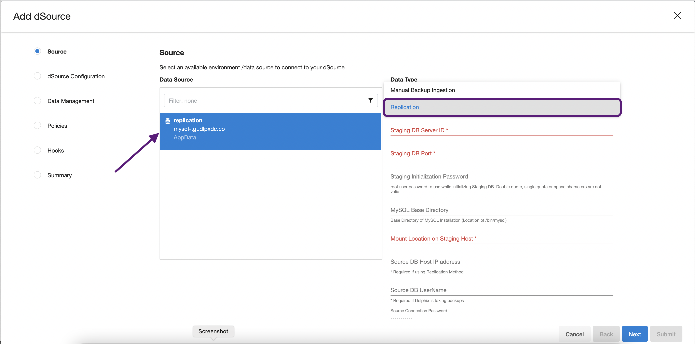

Replication¶
In Replication Mode, Delphix creates a staging database using an initial backup from the source database. This initial backup can be taken by Delphix or can be provided by the end user.
In order to ensure that the staging database remains in-sync with the source database, Delphix can set up a MySQL native replication. from the source db to the staging db.
Pre-Requisites¶
- Staging environment must be added to Delphix.
- A Source Config must be created on the staging environment-MySQL repository.
-
[Recommended] As every organization's MySQL configuration is different, Delphix expects a starter my.cnf file to be present in Delphix Toolkit Directory when creating a staging database. Delphix will use this my.cnf file and modify it as per the configuration provided during the the dsource creation process.
This is recommended to reduce the possibility of errors while restoring the backup from the source database.
Warning
It may take upto 5 minutes after successful dSource creation for the status to show as Active.
Creating dSource¶
- Login to Delphix Management application.
- Click Manage > Datasets.
-
Select Add dSource.

-
In the Add dSource wizard, select the MySQL source configuration which is created on the staging host.
-
Select Replication in the dSource Type dropdown.

-
Provide the additional details required for dsource creation
-
Staging DB Server ID
Server ID for the dsource (stagind db. For Replication Mode, this server id must be greater than the source db server id.
-
Staging DB Port
Port for the dsource (staging db).
-
Staging Initialization Password
Password to use while initializing the dsource (staging db). This password will be assigned to the 'root'@'localhost'
-
MySQL Base Directory
MySQL installation directory. This is where the location of /bin/mysql
-
Mount Location on Staging Host
This is the mount directory for Delphix on the staging host. This location should be unique and empty.
-
Source DB Host IP Address
IP Address of the source db host.
-
Source DB UserName
Delphix db user on the source database. This user will be created in the dsource when the initial backup is restored. Delphix will be using this db user to manage the dsource and other time travel operations.
-
Source DB Password
Password for the source db user.
-
Databases List
Comma separated list of databases on the source MySQL instance that should be part of the dSource. Default value ALL indicates that all databases on the source instance will be brought in.
-
MySQL Backup Path
Full path, including the filename, of the full source db backup to use for the dsource creation. If this is provided, Delphix will not create a backup.
-
LogSync
Whether to enable replication or not. If checked, Delphix will set up the dsource (staging db) as a replicated slave of the source database.
-
Replication UserName
Delphix DB user with replication privileges to set up replication from source to staging db. Currently, Delphix uses the Source DB user for replication.
-
Replication User Password
Password for the replication db user.
-
-
On dSource Configuration screen, select the dataset group where the dSource will be placed and click Next.
- On the Data Management screen, select the staging environment and the environment user and click Next.
- On the Policies screen, select the Snapsync and Retention policies for the dSource and click Next.
- On the Hooks screen, add any pre-sync and (or) post-sync hooks as required and click Next.
-
Review the dSource configuration on the Summary screen and Submit. The Linking process has commenced.

Once the dSource creation is successful, the Timeflow tab should show the initial snapshot.
Done, What's Next?¶
Alright, we have created a MySQL dSource. Next step - Provision a VDB.